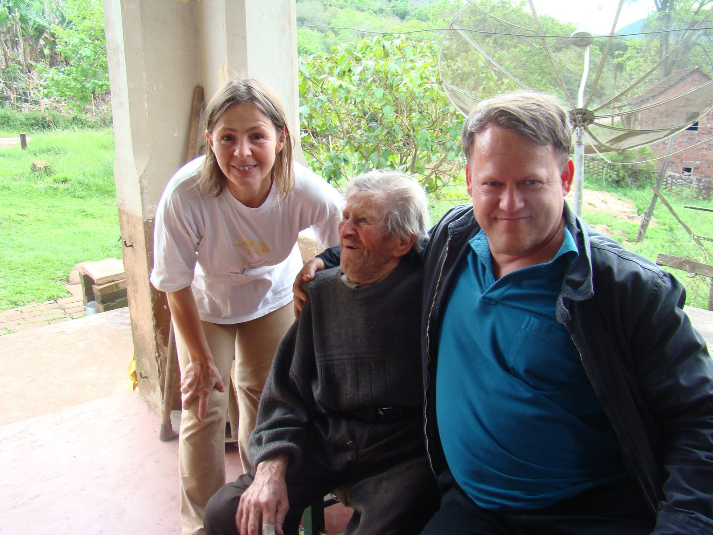
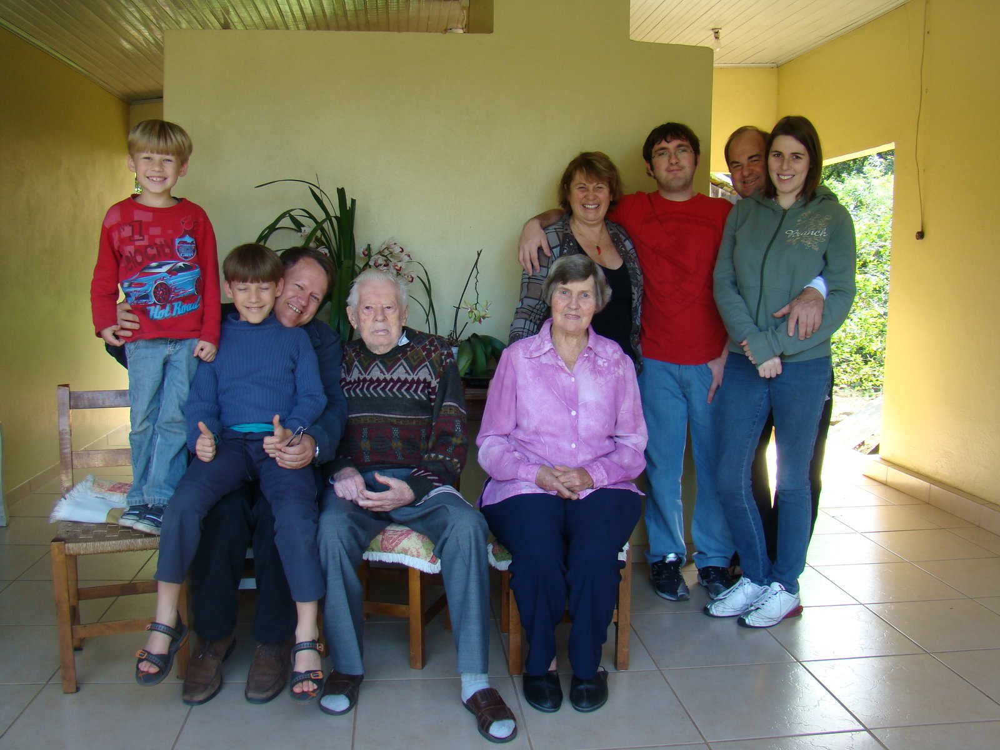
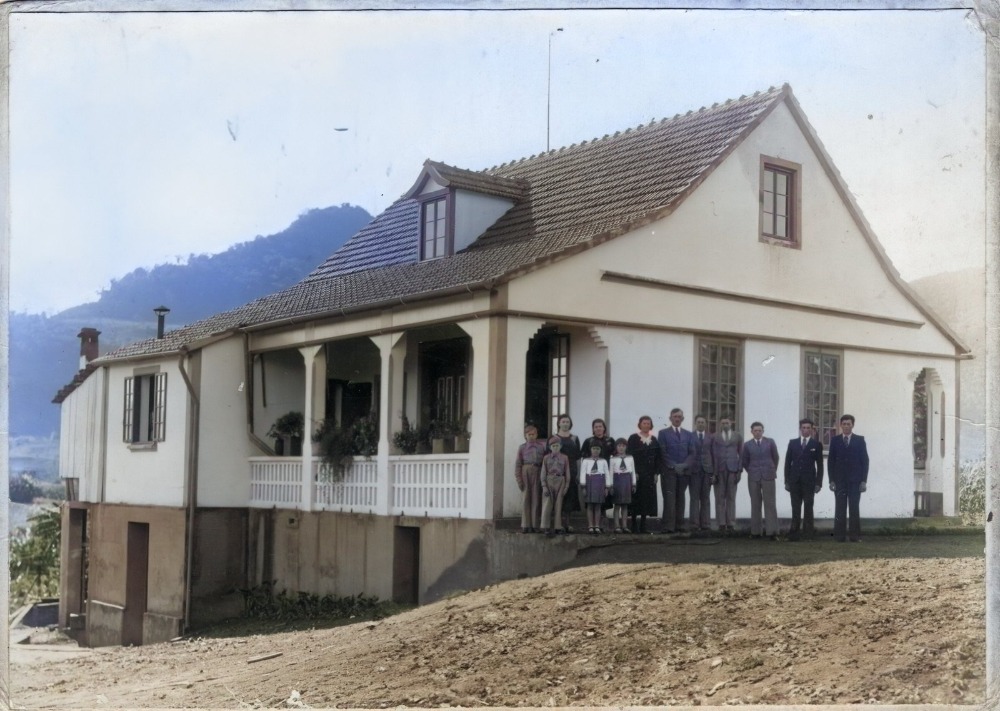

Parte IV · Os Horizontes de Bárbara
Capítulo 12 — Da Fazenda Lohmann aos Cemitérios de Estrela — O Vale do Taquari
Os rios do Sul têm memória longa. Quem mora na beira deles também precisa ter.
29,3° S · 51,9° O, Palmas, Arroio do Meio, RS
A família diz que Francisco Jacob Lohmann e Miguelina Leocádia Endres tiveram doze filhos. Os registros dão a dois deles datas de nascimento anteriores ao casamento dos pais e trazem dois Walter. Na fotografia da casa nova, contei onze.
Setembro de 2012
Arroio do Meio e Estrela, Rio Grande do Sul, 25 de setembro de 2012
Chegamos ao Vale do Taquari na primavera, com os morros muito verdes e o rio largo correndo entre eles. Matheus tinha dez anos e Lucas tinha sete. Levávamos uma lista de nomes. O objetivo da viagem era simples de dizer e difícil de cumprir: encontrar, enquanto ainda estavam vivos, os irmãos de Oma Rosita.
Dos doze filhos de Francisco Jacob Lohmann e Miguelina Leocádia Endres, alguns ainda viviam em 2012, espalhados por Arroio do Meio, Estrela e arredores, em casas de colônia e de cidade pequena. Pelas datas que o FamilySearch nos dá, o Tio Urbano tinha cerca de noventa e oito anos, o Tio Armando, cerca de noventa e seis, a Tia Sunta, cerca de noventa e um, e o caçula, o Tio Arlindo, oitenta e oito. Eram a última geração que tinha visto Francisco e Miguelina com os próprios olhos.
Não vou reconstituir aqui as conversas daqueles dias. Não as gravei como gravei a minha mãe nas Bodas, e a memória que tenho delas é a de um visitante emocionado, não a de um escrivão. Seria fácil pôr na boca dos tios frases bonitas sobre a enchente de 1941, sobre o pai viúvo, sobre a casa nova. Não farei isso. O que posso fazer é descrever as fotografias, que não mentem sobre o que mostram, e dizer o que senti.
A visita ao Tio Armando foi numa varanda de colônia. Na fotografia, ele está sentado numa cadeira baixa, de suéter escuro de lã, com os cabelos brancos desalinhados e um sorriso torto de quem acha graça de alguma coisa que ficou fora do quadro. Estou sentado ao lado dele, de jaqueta, com o braço passado pelos ombros dele. A legenda da família diz que Bárbara estava comigo nessa visita. Atrás, uma coluna de alvenaria descascada, uma antena parabólica velha, um galpão de tijolos, o pasto e o morro coberto de mata. O céu está branco. É a paisagem de quase todas as colônias alemãs do Sul, e eu a reconheci como se fosse a de Vidal Ramos.

Na casa do Tio Urbano, o mais velho dos que encontramos, a fotografia é de uma varanda amarela com um vaso de orquídeas ao fundo. Ele está sentado ao centro, de suéter estampado e calça social, as mãos grandes cruzadas no colo e o olhar firme de um homem que já viu quase um século. Ao lado dele, uma senhora de blusa lilás. Eu estou à esquerda, com Matheus no colo fazendo sinal de positivo com os dois polegares, e Lucas, de camiseta vermelha, está de pé numa cadeira de palha atrás de nós, rindo, mais alto que todo mundo. Atrás, de pé, mais parentes da casa. Como na garagem de Joinville, o retrato junta pontas distantes de uma mesma linha: os meus filhos na mais nova, um tio-bisavô na mais velha.

A visita ao Tio Arlindo foi à noite, numa sala de cortinas de renda, com o quadro de uma orquídea amarela na parede e o chão de carpete vermelho. Na fotografia, tirada com flash, estamos todos de pé, encostados uns nos outros como numa foto de formatura, menos uma senhora idosa que ficou sentada no canto. Lucas está bem no meio, de camiseta vermelha, e Matheus, de suéter azul, está à esquerda. O Tio Arlindo morreria em 7 de fevereiro de 2018, em Estrela, um dia depois de completar noventa e quatro anos. Na véspera, 6 de fevereiro, eu estava diante do balcão do Standesamt de Maxhütte-Haidhof, na Baviera, com o registro de nascimento do meu avô nas mãos. As duas datas ficaram para sempre juntas no meu calendário.

A última fotografia é a da Tia Sunta, Asunda Erna Lohmann. É a minha preferida, por um detalhe. Ela está sentada numa poltrona de couro gasto, num pátio de pedrisco, diante de uma casa pintada de laranja, de mãos cruzadas e com o rosto sério de quem não gosta muito de fotografia. Em volta, de pé e sentados, estão parentes da casa e uma moça com um cachorrinho no colo. Matheus e Lucas estão de pé junto à porta, e a legenda da família registra que Bárbara os acompanhava nessa visita. Em primeiro plano, viradas para a Tia Sunta, estão quatro cadeiras vazias: uma de plástico branco, duas de madeira, uma de praia listrada. Foi ali que a conversa aconteceu. Quem se levantou para a fotografia deixou as cadeiras na posição em que estavam, de frente para ela.

Aqui Bárbara fala.
Eu não sabia bem o que ia encontrar. Eram os irmãos da minha avó, mas eu os conhecia quase só de nome. O que me pegou foi o rosto. Em cada um deles havia alguma coisa da Oma: o jeito de cruzar as mãos, o queixo, o olhar meio desconfiado para a câmera. Era como ver a minha avó repartida em quatro pessoas. Eu quis que os meninos olhassem bem, mesmo sem entender tudo. Achei que um dia eles iam querer lembrar que estiveram ali.
Naqueles dias também passamos pelos cemitérios de Estrela e de Arroio do Meio. Guardo deles menos detalhes do que gostaria, e por isso o que escrevo nas seções seguintes sobre os túmulos se apoia também nas fotografias e nas fichas publicadas pela CAPEF, o centro de pesquisas genealógicas de Lajeado que reconstituiu as famílias fundadoras de Estrela.
De Harderode ao Hiran
Harderode, Ducado de Braunschweig, setembro de 1846
Harderode é uma aldeia pequena nas colinas a leste do Weser, perto de Hameln, a cidade do flautista. Ali viviam, no início do século XIX, Johann Friedrich Christian Lohmann, nascido em 23 de outubro de 1788, e Sophie Dorothee Elizabeth Schrader, nascida em 16 de fevereiro de 1796. São os hexavós de vocês: sete gerações acima de Matheus e Lucas. Johann Friedrich era professor, segundo a ficha da CAPEF, o que combina com o orgulho que a liga dos Lohmann daquela região tinha da sua linhagem. Num documento de 1938, essa liga dizia que, desde um certo Tönnis Lohmann, mestre-escola e auxiliar de culto por volta de 1640, o clã dera professores e pastores “em todas as ramificações”. Leio esse documento com dois cuidados. Um é a desconfiança natural diante de toda genealogia que se gaba de si mesma. O outro é o desconforto com a data: em 1938, na Alemanha, o interesse pelos brasões “de linhagem” tinha um contexto que não posso ignorar. Mas a profissão do pai de Georg Karl Maximilian é um fato simples, e eu o registro.
O filho deles, Georg Karl Maximilian Lohmann, nasceu em Harderode em 12 de julho de 1821. Foi comerciante. Em 4 de setembro de 1846, aos vinte e cinco anos, embarcou para o Brasil a bordo do Hiran. A CAPEF conta um detalhe que eu acho extraordinário: o Hiran era um navio de carga, e além do capitão e da tripulação levava só dois passageiros, Georg Karl e um senhor Berwig. Comparo com o Formosa de 1913, que trouxe os Haas na terceira classe com centenas de outros emigrantes, e com os brigues de 1828 e 1847, abarrotados de famílias do Hunsrück e do Mosela. O pentavô de vocês atravessou o Atlântico quase sozinho, entre caixas e barris, num tempo em que a viagem durava três meses.
Imagino a travessia, e marco que é imaginação: um rapaz de Braunschweig, filho de professor, debruçado na amurada de um cargueiro, vendo o mar mudar de cor ao cruzar o Equador e sentindo o ar ficar mais úmido e mais quente a cada semana. Se tinha alguma noção de meteorologia, e um filho de professor talvez tivesse, terá aprendido na prática o que nós ensinamos na universidade: que os alísios de nordeste empurram os veleiros para o sul, que a calmaria equatorial os prende, que os alísios de sudeste os levam até a costa do Brasil. O Hiran chegou ao Rio de Janeiro em 5 de dezembro de 1846, noventa e dois dias depois da partida.
A ficha da CAPEF diz que era dia de aniversário da princesa Dona Isabel, com solenidades na corte. Aqui o investigador precisa corrigir a lenda. A princesa Isabel nasceu em 29 de julho de 1846. Em dezembro ela não fazia aniversário, era um bebê de quatro meses. É possível que as festas lembradas sejam as do aniversário do imperador Dom Pedro II, em 2 de dezembro, que se estendiam por alguns dias. É possível também que o detalhe tenha se colado à história mais tarde. Não muda nada de essencial, mas mostra como as narrativas de família se enfeitam com o tempo. Este livro também deve ter os seus enfeites. Espero que vocês os encontrem.
Ficha do Arquivo: Georg Karl Maximilian Lohmann (FamilySearch 27QQ-TM9). Nascimento: 12/07/1821, Harderode (Braunschweig). Emigração: 04/09/1846, no cargueiro Hiran, com um único outro passageiro (Sr. Berwig). Chegada ao Rio de Janeiro: 05/12/1846. Casamento: 06/05/1849, em Kaffeeschneis (Picada Café, então São Leopoldo), com Bárbara Wingert (05/07/1828–24/11/1915). Morte: 28/07/1899, Linha Lenz, Estrela (RS). Fonte: CAPEF, Famílias fundadoras de Estrela — Família Lohmann. Ressalva: a associação da data de chegada ao aniversário da princesa Isabel não se sustenta (ela nasceu em 29/07/1846).
Do Rio, Georg Karl seguiu para o Sul, para a velha colônia de São Leopoldo, fundada em 1824. Em Kaffeeschneis, a “picada do café” que hoje é o município de Picada Café, casou em 6 de maio de 1849 com Bárbara Wingert, nascida em 5 de julho de 1828. Repito o nome porque ele me fez sorrir da primeira vez que o li. A tetravó de Bárbara também se chamava Bárbara.
O casal teve doze filhos. Para garantir a terra deles, Georg Karl fez, em 1870, a compra que deu nome a um lugar. Segundo a história registrada por pesquisadoras da região, um proprietário chamado Cláudio José Monteiro vendeu a ele vinte e quatro colônias de terra no então município de Estrela, ao longo do rio Taquari. A CAPEF fala em cerca de mil e duzentos hectares, o que daria colônias de uns cinquenta hectares cada. A medida da colônia variou ao longo do tempo, e a conta não precisa fechar ao metro. Ali nasceu a Fazenda Lohmann, que hoje é uma localidade do município de Roca Sales, a nove quilômetros da sede. Tem igreja evangélica com cemitério ao lado, salão de baile, uma sociedade de cantores fundada em 1914 e a tradição dos bailes de Kerb, com a antiga cerveja caseira de gengibre que estourava nas garrafas. As pesquisadoras contaram umas cento e vinte famílias, a maioria evangélica.
Doze filhos e vinte e quatro colônias: duas colônias por filho. A conta é tão redonda que não parece acaso. Um imigrante que viera de uma terra onde a partilha a cada geração deixava os filhos sem chão comprou, de uma só vez, terra suficiente para que cada filho tivesse a sua. Na Baviera dos Haas, o herdeiro único ficava com tudo e os outros iam ser oleiros e operários. Na Fazenda Lohmann, um pai tentou que ninguém precisasse partir. Não conseguiu, é claro. Os netos se espalharam pelo Vale, por Erechim, pelo Paraná, e uma bisneta acabou em Joinville.
A casa de enxaimel da família foi desmontada e reconstruída no Parque Histórico de Lajeado, onde funciona como museu da família Lohmann. Serviu de cenário para o filme A Paixão de Jacobina, sobre a revolta dos Mucker, os conflitos religiosos que abalaram a colônia de São Leopoldo em 1874. Gosto dessa ironia: a casa de uma família luterana bem-comportada, filmada como palco de um cisma. Georg Karl morreu em 28 de julho de 1899, na Linha Lenz, e Bárbara Wingert em 24 de novembro de 1915. Os túmulos deles estão no pequeno cemitério da Linha Winck, em Estrela, lado a lado: primeiro o dela, depois o dele, nas fotografias da CAPEF. O irmão de Georg Karl, Georg August Christian, que veio em 1848 com a irmã Karoline, está no cemitério de Novo Paraíso, também em Estrela, junto da mulher, Katharina Ballus.
Vinte e seis dias
Arroio do Meio, dezembro de 1889
O terceiro filho de Georg Karl e Bárbara foi Friedrich Lohmann, nascido em Estrela em 18 de fevereiro de 1853. É o tetravô de vocês. Ele casou com uma moça de outra família imigrante, Suzana Regina Schnack, nascida em 9 de julho de 1858.
Os Schnack vinham do extremo norte da Alemanha, de Schleswig-Holstein, a terra entre dois mares. Julius Georg Schnack nasceu lá em 16 de fevereiro de 1830, filho de Peter Friedrich Ludwig Schnack e de Regine Marie Wacker. Casou em 8 de março de 1857 com Susanna Charlotte Köhnlein e teve sete filhos em Estrela e Arroio do Meio. Duas das filhas casaram com dois irmãos Lohmann: Suzana Regina com Friedrich, Elisa Sophie com August Georg. Nas colônias isso era comum. As famílias que chegavam juntas, que se ajudavam na derrubada e se encontravam no culto, acabavam ligadas por mais de um fio. Julius Georg viveu até os noventa e quatro anos e morreu em Arroio do Meio em 1924. Susanna Charlotte morreu em 1926, aos noventa e um.
A filha deles não teve a mesma sorte. Friedrich e Suzana Regina tiveram cinco filhos: Júlio Carlos (1881), Alberto Jorge (1886), Berta Guilhermina (1888), Adolfo André e Francisco Jacob, ambos dados como nascidos em 1889. Francisco Jacob nasceu em 20 de novembro de 1889. Não sei se Adolfo André era gêmeo dele ou se nasceu no começo daquele ano e a data está errada. É uma pergunta para os livros de batismo. Em 16 de dezembro de 1889, vinte e seis dias depois do parto, Suzana Regina morreu em Arroio do Meio. Tinha trinta e um anos.
O registro não diz de quê. Nos anos 1880, em uma colônia do interior gaúcho, a causa mais provável de uma morte assim, semanas depois de um parto, era a febre puerperal, uma infecção que a medicina da época mal compreendia e que matava mulheres jovens em toda parte. Mas é uma hipótese. O fato é este: Friedrich ficou viúvo aos trinta e seis anos, com cinco filhos, o mais novo com menos de um mês. Ele não casou de novo, que eu saiba, e viveu até 1937. Quem criou Francisco Jacob? Uma irmã mais velha, uma tia Schnack, uma vizinha com leite? Não sei. Esse menino criado sem mãe é o rapaz de bigode do retrato de casamento de 1914.
Há uma correspondência neste livro que não planejei e que me impressionou quando a vi. No Capítulo 10, Anna Eller morre pouco depois do nascimento de Fernando Dörner, o caçula, por volta de 1898. Aqui, nove anos antes, Suzana Regina Schnack morre vinte e seis dias depois do nascimento de Francisco Jacob, o caçula. Os dois meninos órfãos de mãe cresceram a centenas de quilômetros um do outro, sem nunca se conhecer. Um se tornou bisavô de Bárbara, o outro, meu avô. Em vocês dois, Matheus e Lucas, essas duas perdas se encontram.
Ficha do Arquivo: Recenseamento do Brasil realizado em 1º de setembro de 1920, vol. III (Agricultura), relação dos proprietários de estabelecimentos rurais do Rio Grande do Sul (Rio de Janeiro, 1924). Entre as ocorrências do sobrenome: “Adolpho André Lohmann” (provavelmente o irmão de Francisco Jacob), uma “Linha Lohmann”, “Frederico Lohmann” e “Frederico H. Lohmann” (um deles talvez Friedrich, então com 67 anos; não foi possível confirmar o município), além de proprietários Schnack e Endres. A lista não identifica parentescos; as atribuições são hipóteses.
Os doze de Palmas
Palmas, Arroio do Meio, meados da década de 1930
Francisco Jacob Lohmann casou com Miguelina Leocádia Endres em 5 de setembro de 1914. Ela nascera em 9 de dezembro de 1891, de uma família Endres do Vale cuja história ainda não pesquisei a fundo. O censo de 1920 registra pelo menos dois proprietários Endres no Rio Grande do Sul, mas não sei qual, se algum, era o pai dela. O casal teve doze filhos, e a lista, que eu sei de cor de tanto conferir, merece ser escrita por inteiro, porque é a lista dos tios-avós de Bárbara: Walter Érico, Reinholdo, Urbano Aldo, Armando Ernesto, Walter Erich, Blanca Erna, Albano Paulo, Rosita Érica, Eldo Astor, Asunda Erna, Dulsa Iria e Arlindo Erno.
Devo a vocês, porém, uma confissão de investigador. As datas que os registros dão a esses doze nomes não fecham. Walter Érico aparece como nascido em 1911 e Reinholdo em 1912, antes do casamento de 1914. Há dois Walter, um de 1911 e outro de 27 de dezembro de 1916, no mesmo ano de Armando. Três filhos aparecem como nascidos em 1918, entre eles Rosita, e dois em 1921. Algumas datas devem ser apenas aproximadas, lançadas por alguém que as calculou de memória. E não posso descartar que os dois Walter sejam uma só pessoa registrada duas vezes, o que é um erro frequente nas árvores colaborativas. A família diz doze, e eu escrevo doze, mas deixo aqui a advertência.
A fotografia mais preciosa desse ramo me ajudou a pensar o problema. É um retrato de grupo, colorido muito tempo depois, com um papel colado embaixo que diz: “Família de Francisco Jacob Lohmann casado com Miguelina Leocádia Endres Lohmann. (Foto por ocasião da conclusão da casa nova em Palmas – Arroio do Meio)”. Os pais estão sentados ao centro, ela de vestido escuro com gola de renda branca, ele de terno azul e bigode, agora grisalho, o mesmo rapaz do retrato de 1914 vinte e tantos anos depois. Em volta, os filhos: as moças de vestido, os rapazes de terno e gravata, duas meninas de cabelo em cuia e blusa de marinheiro, dois meninos de camisa de botão. Contei e recontei: são treze pessoas, os pais e onze filhos. A legenda dá os onze nomes, e entre eles há um só Walter, o Walter Érico. Também grafa “Urbano Arno” onde os registros dizem “Urbano Aldo” e “Reinboldo” onde dizem “Reinholdo”. Pela idade dos menores, o caçula Arlindo, nascido em 1924, parece ter uns dez ou doze anos, e por isso situo a foto em meados dos anos 1930. Rosita está na ponta direita, uma moça de rosto largo e sério, de vestido azul bordado.

A outra fotografia mostra a própria casa. É um sobrado branco de telhado alto e íngreme, com uma água-furtada, uma varanda de colunas e gradil branco cheia de vasos, e um porão alto de alvenaria aberto para o declive do terreno. A família está de pé, enfileirada ao longo da fachada, pequena diante da construção. A terra em volta ainda está nua, revolvida pela obra. Atrás, um morro de mata e o vale aberto. Imagino o orgulho daquele dia, e aqui o verbo imaginar é honesto: um homem que nasceu sem mãe, numa colônia onde o avô comprara vinte e quatro colônias para os filhos, reunindo os onze ou doze filhos que tinha diante da casa que construíra para eles.

Sobre essa imagem, deixo Bárbara falar.
O que me impressiona é que todo mundo está tão arrumado para a foto de uma casa. Os meninos de camisa abotoada, as meninas de gravatinha de marinheiro, o bisavô de terno. Como se a casa fosse alguém da família que acabava de chegar. E acho que era. A Oma Rosita saiu dali, casou com um professor, foi viver em Estrela e em Nova Petrópolis e terminou em Joinville. Mas foi naquela casa branca que ela foi moça.
Os filhos de Francisco e Miguelina seguiram o caminho de todas as famílias grandes da colônia. Alguns ficaram no Vale, outros partiram. Rosita casou com Erno Hoeveler e foi viver nas escolas onde ele ensinava. Arlindo casou em 1949 com Hilda Rahmeier e viveu e morreu em Estrela. Os outros eu conheço só pelos nomes e pelas fotografias de 2012. Um comentário deixado por um descendente num blog de história do Vale guarda um episódio dessa dispersão que eu não conhecia. Júlio Carlos Lohmann, o irmão mais velho de Francisco Jacob, teria tido uma fazenda em Erechim invadida durante a Revolução de 1923, a guerra civil entre chimangos e maragatos. Ele, a mulher e os três filhos teriam sido expulsos a tiros e se refugiado na Fazenda Lohmann, com o avô e os tios, em Roca Sales, antes de se estabelecerem em Estrela. Registro como o recebi: um depoimento de família, sem documento que o confirme. Mas ele mostra a função que a terra comprada em 1870 continuava a ter cinquenta anos depois: era o lugar para onde se voltava quando tudo dava errado.
O rio em frente à casa
O Salto do Taquari, em Palmas, fica bem em frente à casa. Para quem constrói, um rio assim é um vizinho generoso. Traz a terra fértil das várzeas, move moinhos e foi durante muito tempo a estrada por onde os vapores levavam as safras do Vale até Porto Alegre. Os colonos do Taquari, como os do Itajaí e do Tubarão, assentaram-se junto à água por boas razões.
Mas os rios do Sul têm humores longos. O Taquari nasce, com o nome de rio das Antas, nos campos de cima da serra, e recolhe a chuva de uma bacia enorme de encostas íngremes. Quando uma frente fria se arrasta devagar sobre o Rio Grande, alimentada pela umidade que o jato de baixos níveis traz da Amazônia pelo leste dos Andes, ou quando um ciclone extratropical se forma sobre o estado e despeja num dia a chuva de um mês, essa água toda converge para o vale em poucas horas. O rio sobe metros. É uma meteorologia que conheço bem, porque passei boa parte da vida profissional tentando prevê-la e modelá-la, no Itajaí e no Taquari.
Em maio de 1941, poucos anos depois da fotografia da casa nova, o Taquari teve uma das maiores cheias da sua história registrada. Toda a bacia do Guaíba transbordou, e Porto Alegre ficou semanas debaixo d’água. Os doze irmãos de Palmas tinham então entre dezessete e trinta anos. É muito provável que todos tenham guardado na memória aquela água subindo pelo vale, e que a cheia de 41 tenha se tornado, como para todas as famílias do Taquari, a medida de todas as outras. Não tenho, porém, nenhum relato deles sobre isso. Não perguntei em 2012. Hoje eu perguntaria primeiro.
O perfil topográfico que fiz anos depois põe a Casa Lohmann na cota de quarenta e cinco metros, de frente para o Salto. Desenhei nesse perfil as linhas das grandes cheias, a de 1941 e as que vieram depois. Não vou contar aqui o que o desenho mostra. Essa história pertence ao próximo capítulo, junto com a do Tubarão e a do Itajaí, porque as três são a mesma história. Digo apenas o que todo mundo no Brasil soube pelos jornais. Em setembro de 2023, um ciclone extratropical despejou sobre o Vale do Taquari uma chuva que matou dezenas de pessoas, e Roca Sales, onde fica a Fazenda Lohmann, Muçum e Arroio do Meio, onde fica Palmas, foram arrasadas. Em novembro de 2023 o rio voltou a subir. Em maio de 2024, na maior catástrofe climática da história do Rio Grande do Sul, subiu outra vez, mais alto do que todos lembravam.
O Tio Arlindo já não estava vivo para ver. Morreu em fevereiro de 2018, no mesmo mês em que eu abria os livros de Maxhütte-Haidhof. Dos outros irmãos, não sei as datas, e não vou supor. Mas quando vi pela televisão, em 2023 e em 2024, as imagens de Roca Sales e de Arroio do Meio cobertas de lama, a primeira coisa que fiz foi procurar no mapa duas coordenadas: a da Fazenda Lohmann e a da casa branca diante do Salto. Depois fui procurar as fotografias de setembro de 2012, as varandas, as cadeiras em roda, os quintais de pedrisco. Eram os mesmos lugares.
Aqui Bárbara encerra a Parte IV.
Olho o perfil da casa, com as linhas das cheias desenhadas por cima, e custo a juntar as duas imagens. Aquela casa é a da foto em que todo mundo está de roupa de domingo. Pensei nos meus tios-avós, nas cadeiras em volta da Tia Sunta, e pensei que a gente tinha chegado a tempo de ver as pessoas, mas não sabia que também estava chegando a tempo de ver os lugares como eles eram.
Vocês dois, Matheus e Lucas, estiveram nesses lugares quando eram pequenos. Estão nas fotografias, de camiseta vermelha e de suéter azul, no colo de um pai e em pé numa cadeira, ao lado de tios que tinham nascido antes da Primeira Guerra. Talvez não se lembrem. Por isso escrevi este capítulo. O próximo começa por onde este termina: pela água que sobe e pelas famílias que, há quase dois séculos, constroem as casas na beira dela.
Para vocês descobrirem
- Adolfo André era gêmeo de Francisco Jacob, ou nasceu no começo de 1889 e a data está errada? Os livros de batismo podem dizer.
- Quem criou Francisco Jacob depois da morte de Suzana Regina, em 16 de dezembro de 1889?
- Houve dois Walter entre os filhos de Francisco e Miguelina, ou um só, registrado duas vezes? A legenda da fotografia de Palmas traz só o Walter Érico.
- O que os irmãos de Palmas guardaram da cheia de maio de 1941? Eu não perguntei em 2012. Perguntem aos descendentes do Tio Urbano, do Tio Armando, da Tia Sunta e do Tio Arlindo.